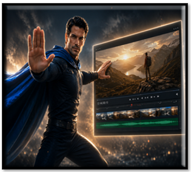
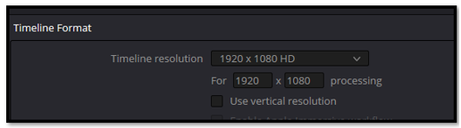
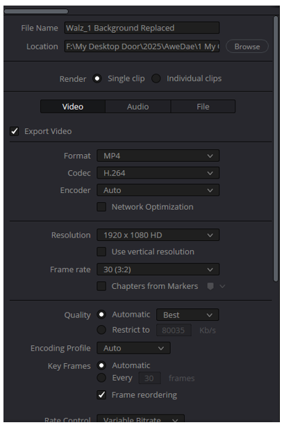
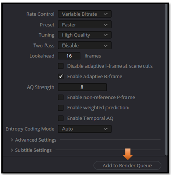
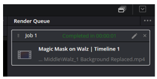
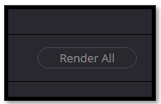
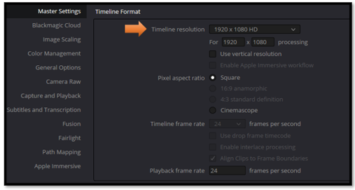
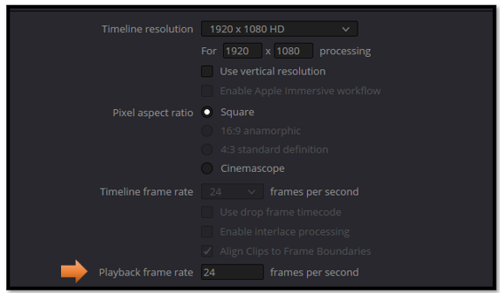

~4 How to Export an MP4 in DaVinci Resolve ~
~Simple Step by Step Guide for Beginners~
6/22/2026

Once your edit is complete, it’s time to turn your project into a finished MP4 file.
The Deliver Tab
At the very end of the tabs at the bottom of the App, is a Deliver tab. Looks like a spaceship.
This shows up in a panel on the left side and not in the right.
1. Choose Your Export Preset:
- On the left side, look for "Render Settings"
2. Choose Save Location:
- At the top, you'll see "Filename" and "Location"
- Click "Browse" to choose where to save your MP4
- Give it a name, for example: "Walz_Background.mp4"
3. Format and Codec
MP4 with H.264 gives you the best compatibility with CapCut, YouTube, and most devices.
- Under "Format", select MP4
- Under "Codec", select H.264 (best compatibility with CapCut)
4. Quick Settings to Check:
- Resolution: Should match your timeline (1920x1080 or whatever you're using)
Click File (top menu)
Click Project Settings
Look at the Timeline Resolution section
You'll see something like: 1920 x 1080 HD or 3840 x 2160 4K, etc.
Note the resolution and frame rate (like 24fps, 30fps, 60fps)

- Frame Rate: Match your timeline frame rate. (CapCut had 24 fps found under details at right)
- Quality:
- Move the "Quality" slider to "Restrict to" around 15-20 Mbps for good quality
- Or use "Automatic" if available
5. Render:
- Click "Add to Render Queue" button (bottom right)
- Then click "Render All" button
It will process and create your MP4 file!
Enter your Save info here, and all the rest of it, that it told you to do, from the above list.

Add to Render Queue, button at bottom to start rendering.

It will show your job top-right. This one is Completed.

You must Click this button, under that box “Render All” to Start. You will find this button under job1.

Watch it, if your video looks stretched or blurry, double‑check that your timeline resolution matches your export resolution.
This is something that is normally not discovered until you complete your render, so you will need to do some adjustments and then come back.
The reason that you may not notice things being off, is that in order for DaVinci to keep your video running smoothly during editing, it will cause a bit of softening, or blurriness, in order to preserve a good user experience and a bit of memory. But your final rendered version should be high quality and crystal clear. If it is not, it is usually because of 2 different issues.
1 Timeline Resolution
This one is usually the main culprit.
If your timeline is set to 1280×720 but your footage is 1920×1080 or 4K, Resolve will downscale everything during editing.
Then when you export at 1080p or 4K, it will upscale the blurry timeline, and the final video looks soft.
This is the #1 beginner mistake.
How to check it before rendering:
- Go to File → Project Settings
- Look at Timeline Resolution

- Make sure it matches your intended export (usually 1920×1080 or 3840×2160)
If this is wrong, the final render will be blurry no matter what.
2. Timeline Frame Rate
If your timeline is 24fps but your footage is 30fps or 60fps, Resolve will blend frames to match the timeline.
This can create:
- softness
- ghosting
- motion blur
How to check:
Same place — Project Settings → Timeline Frame Rate

Match it to your footage.
Once you’ve checked your timeline settings and matched them to your export, you’re good to go. DaVinci Resolve will give you a clean, sharp MP4 without any surprises. It’s one of those tiny steps that makes a big difference — and now that you know where to look, you’ll never get caught by the blurry‑video gremlins again.